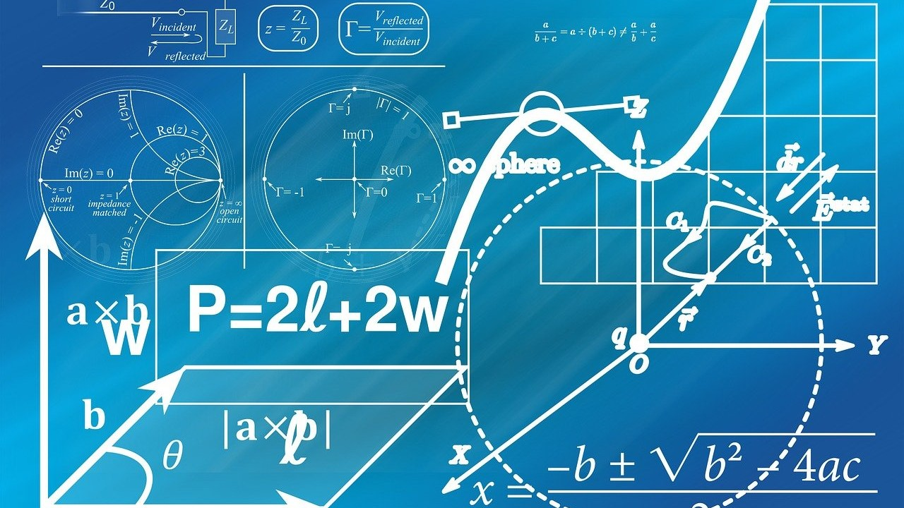

Geometriai alapok
Bevezető kurzusunk betekintést nyújt a vizuális megjelenítés matematikai alapjaiba: síkgeometria, analízis, vektoralgebra, mátrixok, koordinátageometria és differenciálgeometria.

A számítógépes grafika világában két alapvető grafikai formátumot különböztetünk meg: a rasztergrafikát és a vektorgrafikát, amelyek különböző technológiákon és alkalmazásokon alapulnak.
A rasztergrafika pixelekből áll, és olyan képszerkesztő programokkal manipulálható, mint az Adobe Photoshop vagy a GIMP, amelyek lehetővé teszik a fotók és egyéb képek részletes szerkesztését. Ezzel szemben a vektorgrafika matematikai egyenletekkel és geometriai alakzatokkal dolgozik, így bármilyen méretre nagyítható minőségromlás nélkül. A vektoros rajzprogramok, például az Adobe Illustrator vagy az Inkscape, kiválóan alkalmasak logók, illusztrációk és grafikai tervek készítésére.
Mindkét grafikai formátumnak megvannak a maga előnyei és alkalmazási területei: a rasztergrafika részletgazdag képeket biztosít, míg a vektorgrafika rugalmasságot és skálázhatóságot nyújt, ami különösen hasznos a nyomdai és digitális tervezésben. A képszerkesztés területén ezen technológiák kombinációja és megfelelő alkalmazása kulcsfontosságú a professzionális és kreatív vizuális tartalmak létrehozásához.
Bevezető kurzusunk betekintést nyújt a vizuális megjelenítés matematikai alapjaiba: síkgeometria, analízis, vektoralgebra, mátrixok, koordinátageometria és differenciálgeometria.
Merüljön el a rasztergrafika alapjaiban, ahol pixelek segítségével hozunk létre részletgazdag és élethű képeket. Oldalunkon megtalálhatja a rasztergrafika elméleti hátterét, valamint gyakorlati tippeket és technikákat a professzionális munkához.
Ismerje meg a legjobb rasztergrafikus szoftvereket, amelyekkel egyszerűen és hatékonyan dolgozhat a digitális művészet területén. Bemutatjuk a piacvezető programokat, funkcióikat és használati módjukat, hogy Ön is maximálisan kihasználhassa ezek lehetőségeit.
Ha szenvedélye a kreativitás és az illusztráció, és otthonosan mozog a digitális eszközök világában, várjuk jelentkezését! Csatlakozzon csapatunkhoz, és alkosson velünk lenyűgöző látványterveket és képregényeket!

Tanulja meg a vektorgrafika alapjait, ahol matematikai képletek segítségével hozunk létre éles és méretezhető grafikákat. Oldalunkon részletes útmutatókat és gyakorlati példákat talál, amelyek segítenek megérteni a vektorgrafika működését és alkalmazási lehetőségeit.

Fedezze fel a legnépszerűbb vektorgrafikus szoftvereket, amelyekkel könnyedén készíthet skálázható és professzionális grafikákat. Bemutatjuk a legjobb programokat, azok funkcióit és használati módját, hogy Ön is hatékonyan alkothasson a vektorgrafika világában.
Tapasztalt oktatóink segítségével lépésről lépésre haladhad a kezdőtől egészen a profi illusztrátor szintig. Ne hagyja ki ezt a lehetőséget, és indulj el velünk a saját illusztrációs kalandod felé!

A Python nyelv és a Pygame modul széleskörűen támogatja a 2D alakzatok animálását és mozgatását. Ismerkedjen meg vele, és hozza létre saját platformjátékát!

Csatlakozzon hozzánk, és tanuljon meg mindent a rajzfilmes animáció művészetéről! Nálunk elsajátíthatja a karaktertervezés, mozgásábrázolás és történetmesélés alapjait, miközben egy kreatív és támogató közösség részévé válik.
Ha szeret történeteket mesélni és rajzokkal életre kelteni őket, nálunk a helye! Csatlakozzon csapatunkhoz, vegye kezébe a stylust, és alkossa meg a képzeletében megszülető jelenetek egész sorát!